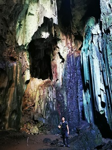
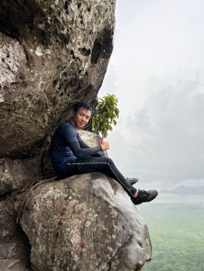
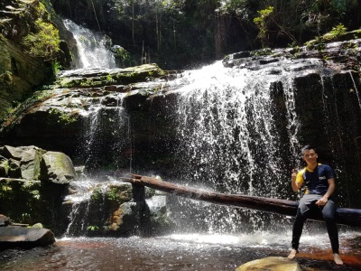

Contact Number: 017-7887101
Email:amkbas89@gmail.com
Address:No 398 Lot 1071 Taman Sukma 93050 Kuching Sarawak
I am a conscientious person who works hard and pays attention to details. I’m flexible, quick to pick up new skills and eager to learn from others. I have experience in customer service, negotiation skill and aiming to use my ability and knowledge to work for your organization.
Currently, I've had the opportunity working at Aeon Credit Service (M) Berhad as a collector. Altough, I working in the field that different from my background in Information System Management, I'm happy because i can gain much experience and skills in customer service field such as negotation sills, customer service skills and also time management skills. Prior to that, I was involved with Sarawak Information System Sdn Bhd (SAINS) as Contact Centre Executive for Skim Latihan 1Malaysia program for 1 year. Now, i'm still working but i'm very excited joined Software Engineer Bootcamp (SEC) 2023 to add my value skills and experiences to work in the IT industry. If you have any questions or would like to learn more about my experience, feel free to ask!
A passionate hiker, I find solace and inspiration in exploring the great outdoors. Regular hiking expeditions have instilled in me a deep sense of resilience, adaptability, and strategic planning. Navigating diverse terrains and overcoming challenges on the trail mirrors my approach to problem-solving in professional settings. Additionally, this activity underscores my commitment to maintaining a healthy, balanced lifestyle, fostering both physical and mental well-being.
  